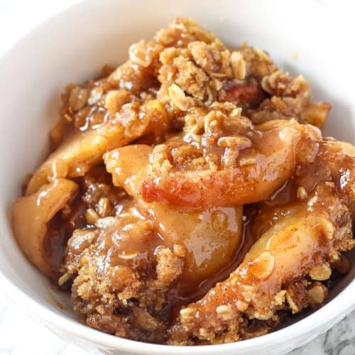
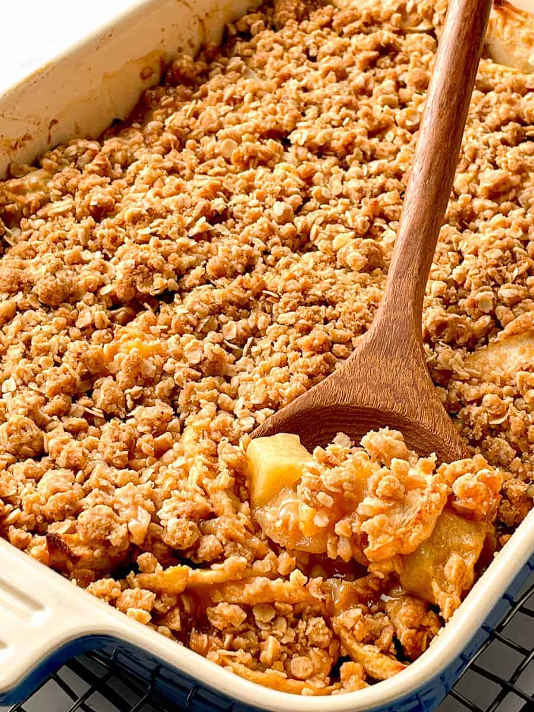

Ingredients
Filling:
- 5 cups fresh apples, sliced
- 1/2 cup granulated white sugar
- 1/2 tsp cinnamon
- 1 teaspoon vanilla extract
Topping:
- 1/2 cup all purpose flour
- 1/3 cup old fashioned oats
- 2/3 cup packed brown sugar
- 1/4 tsp salt
- 1/2 teaspoon cinnamon
- 1/4 cup (1/2 stick) butter, melted
Instructions
- Preheat oven to 350 degrees. Grease a deep dish pie plate or large baking dish with butter or cooking spray and set aside.
- Combine the sliced apples with the sugar, cinnamon, and vanilla extract in a large bowl and mix until all of the apples are evenly coated. Pour into the prepared baking dish.
- In a separate medium size bowl, combine the flour, oats, brown sugar, salt, and cinnamon. Pour in the melted butter and stir until well coated and crumbly. Sprinkle the crumb mixture evenly over the top of the apples.
- Bake in the preheated oven for 45-60 minutes until fruit is soft and the topping is golden brown. Allow to cool slightly before serving. Serve warm with vanilla ice cream on top. Enjoy!
Ingredients and instructions sourced from: Belle of the Kitchen
Photos:
 
Recipe Website References
- Belle of the Kitchen is a great website for recipes, as there are so many different categories to choose from when looking for a recipe. You can filter by course, by method, by ingredient, by holiday and via search bar. There are clear photos, labels and instructions on everything, making the website extremely easy to use and follow.
- Sally's Baking Addiction is a great website for baking recipes. You can find recipes by category (breads, cakes, candy, desserts, etc.), or look at a large catalogue with all of the recipes available. Another feature that I'd like to hightlight is that seasonal recipes are displayed at the top and bottom of the page, allowing them to be easily accessible for those looking for seasonal specific recipes.
- The Chunky Chef is a great recipe for websites because not only are you able to choose from many specific categories, you can see the chef's latests posts and trending recipes. There are clear photos and labels for everything, from the category pages to the ingredients in the recipe.
Non-Recipe Website Inspiration
- Albumcolors.com is a really visually aesthetic website that organizes the 2020 albums of the year by color. I think I could encorporate that into my website in a way that makes the recipes not only easy to find, but aesthetically pleasing.
- Spotify is one of my favorite websites due to how easy it is to navigate and interact with. There are many categories to choose from with constant updates about new releases. The design is also very simple and consistant throughout. These are all features that I think would translate well into a recipe page.
- Youtube's website design works really well as the categories you can choose from are on a small, scrollable bar at the top of the page, maximizing the content below. I also really like that if you hover over an icon, a small textbox will show up with a label for it.